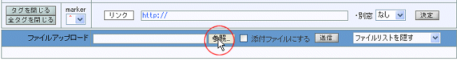
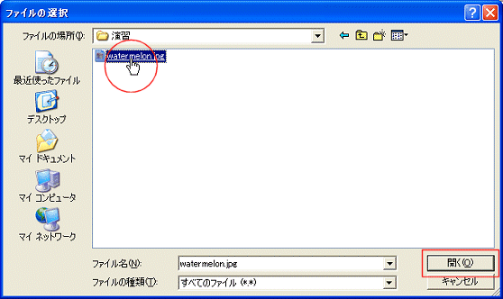
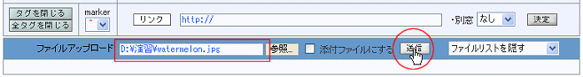
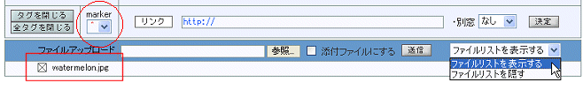

|
表示する画像ファイルを送信するため，エディタの下段にあるファイルアップロード欄で《参照》ボタンをクリックしてファイルダイアログを開きます．

ファイルダイアログで表示したい画像ファイルを選択し，《開く》ボタンをクリックします．

ファイル名がセットされるので，《送信》ボタンをクリックしてサーバーに画像ファイルを送ります．添付ファイルではないので，「添付ファイルにする」チェックボックスをチェックしないでください．

右端のリストボックスで「ファイルリストを表示する」を選択すると，送信したファイル名を確認することができます．また， をクリックすると送信したファイルを削除することができます．

|
|
 投稿手順
投稿手順
 フォーラムのタイトルをクリックする
フォーラムのタイトルをクリックする
 《作成》ボタンをクリックする
《作成》ボタンをクリックする
 ファイルアップロード欄で画像ファイルを選択し《送信》ボタンをクリックする
ファイルアップロード欄で画像ファイルを選択し《送信》ボタンをクリックする